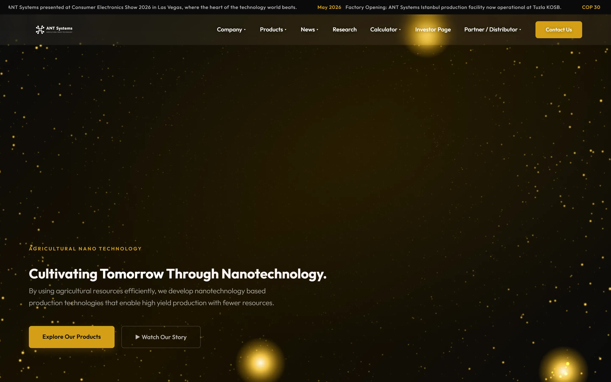
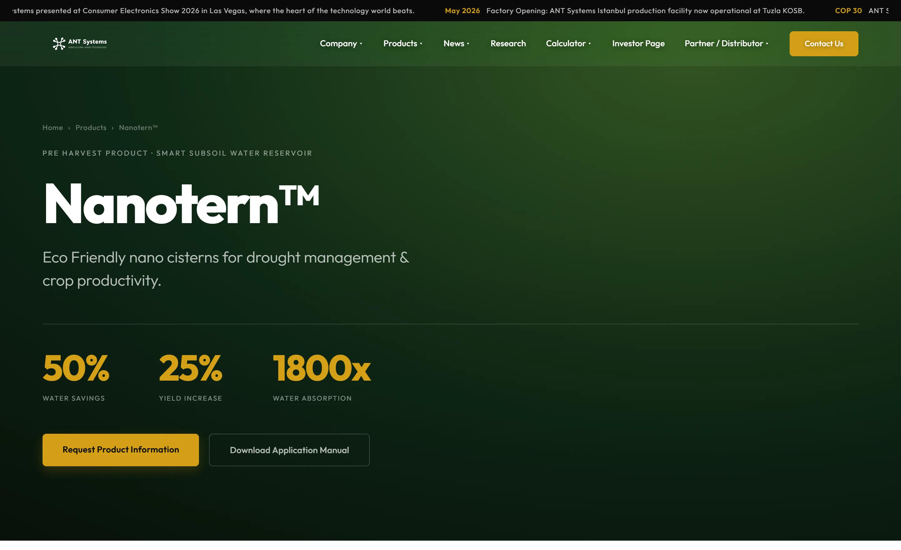
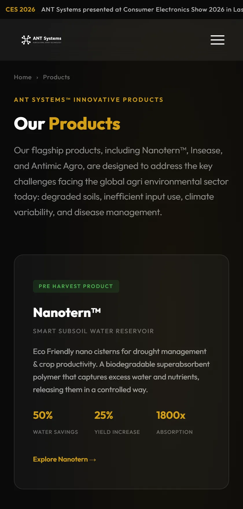
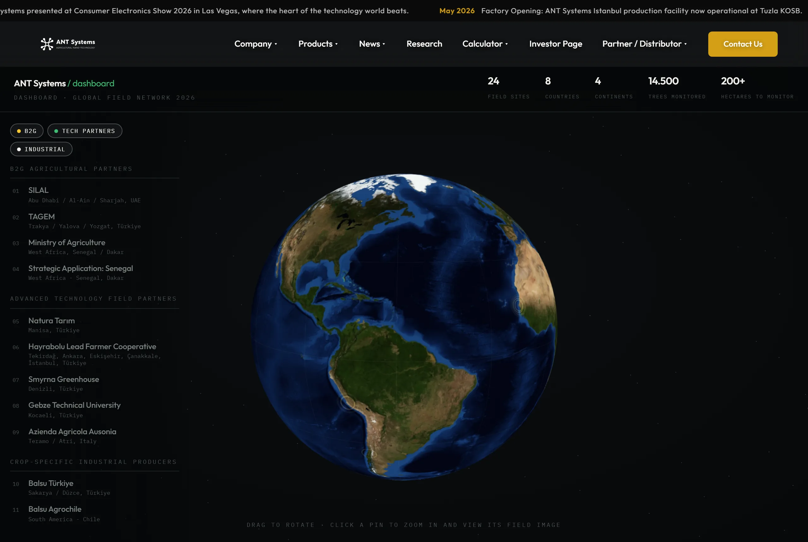
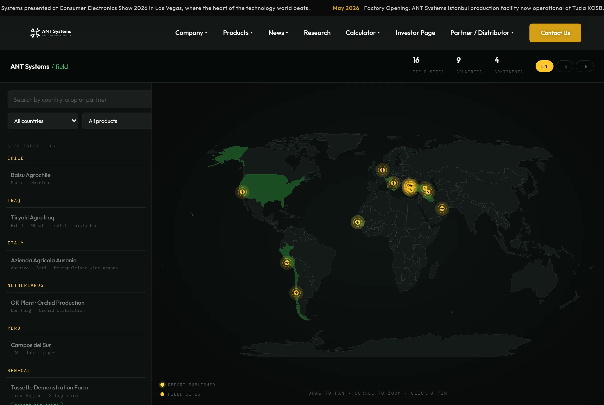

A website for an agricultural nano-technology company whose catalogue is laboratory work: three product brands, five Nanotern formulations, field trials across continents. Architecture, design system and front-end build by ILLUSORR.

A distributor wants dosage and a data sheet. An investor wants production readiness and structure. An agronomist wants the trial data. Behind all three sit 44 patents, 272 peer-reviewed papers and 8,039 citations, and none of it was reachable in fewer than four clicks.
ANT Systems makes nano-scale inputs for agriculture: Nanotern for pre-harvest, Insease during harvest, Antimic Agro after it. Holding company in The Hague, production at Tuzla in Istanbul, fields active across nine countries. Every claim is a trial with a location and a yield number.
So the site had to hold two registers at once. A corporate face that reads credibly to a ministry or an investor, and underneath it a working reference layer, calculators, field reports, downloadable manuals, that a buyer can actually use in the field.
The whole catalogue resolves into nine top-level sections. Products carry the depth, everything else stays one click from the top, and the mega menu shows the map rather than hiding it.
One accent carries every state, hover, active, emphasis, so a page of dense technical copy still has one place for the eye to go.
No page builder and no framework. Every frame below is the real site, loaded live, at the width it was designed for. Click into one and use it.


Trial data became a globe you can spin and a map you can read. Dosage became a calculator instead of a table. Both are built in D3 against the real field data set.


Three passes, in that order, with nothing designed before the map was agreed.
Every document, product and trial was listed, then grouped by who asks for it. That list became nine sections and the mega-menu structure, before a single screen was drawn.
Gold on black, one type family at four weights, six components. Dense technical pages stay readable because nothing competes with the accent.
Hand-written front end, D3 for the data layer, WebGL for the product visual. Static, fast, and handed over as source the client owns.
“ A technical catalogue does not need simplifying. It needs sorting, so the reader who wants the dosage number reaches it in one move.ILLUSORR